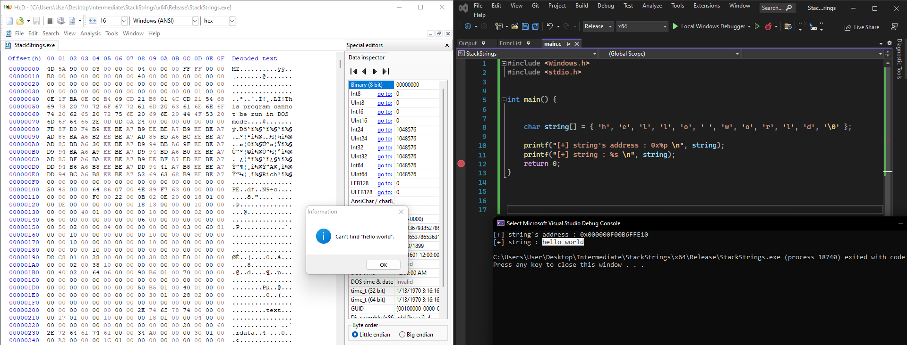
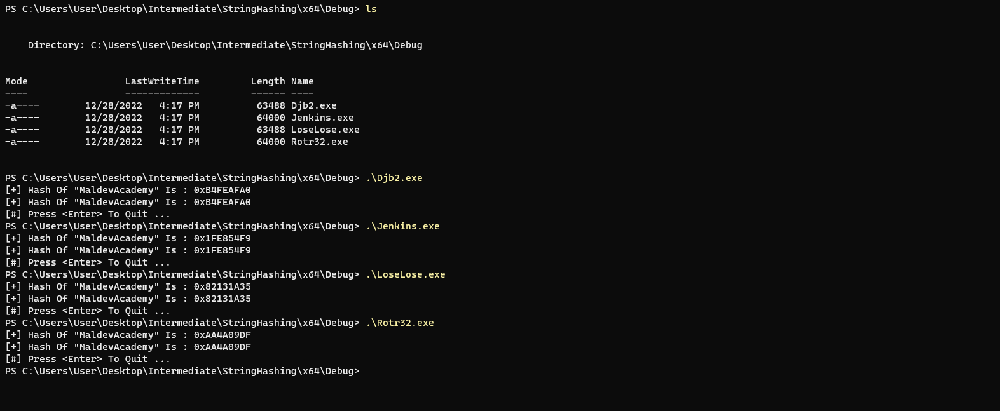

Introduction
Hashing is a technique that is used to create a fixed-size representation of a piece of data, called a hash value or hash code. Hashing algorithms are designed to be one-way functions, meaning that it is computationally infeasible to determine the original input data using the hash value. The hash code is generally shorter in size, and faster to work with. When comparing strings, hashing can be used to quickly determine if two strings are equal, as compared to comparing the strings themselves, especially if the strings are long.
In the context of malware development, string hashing is a useful approach for hiding strings used in an implementation, as strings can be used as signatures to help security vendors detect malicious binaries.
String hashing
This module introduces some string hashing algorithms. It is essential to understand that the output of these algorithms is a number expressed in hexadecimal format, as it is neater and more compact. The following string hashing algorithms are discussed in this module.
There are many more string hashing algorithms available than those discussed in this module some of which can be found in VX-API GitHub repository.
Djb2
Djb2 is a simple and fast hashing algorithm, primarily used for generating hash values for strings, but also applicable to other types of data. It works by iterating over the characters in the input string and using each one to update a running hash value according to a specific algorithm which is demonstrated in the snippet below.
hash = ((hash << 5) + hash) + chash is the current hash value, c is the current character in the input string, and << is the bitwise left shift operator.
The resulting hash value is a positive integer that is unique to the input string. Djb2 is known to produce good distributions of hash values, resulting in a low probability of collisions between different strings and their respective hash values.
The Djb2 implementation shown below is from the VX-API GitHub repository.
#define INITIAL_HASH 3731 // added to randomize the hash#define INITIAL_SEED 7 // generate Djb2 hashes from Ascii input string
DWORD HashStringDjb2A(_In_ PCHAR String)
{
ULONG Hash = INITIAL_HASH;
INT c;
while (c = *String++)
Hash = ((Hash << INITIAL_SEED) + Hash) + c;
return Hash;
}
// generate Djb2 hashes from wide-character input string
DWORD HashStringDjb2W(_In_ PWCHAR String)
{
ULONG Hash = INITIAL_HASH;
INT c;
while (c = *String++)
Hash = ((Hash << INITIAL_SEED) + Hash) + c;
return Hash;
}JenkinsOneAtATime32Bit
The JenkinsOneAtATime32Bit algorithm works by iterating over the characters of the input string and incrementally updating a running hash value according to the value of each character. The algorithm for updating the hash value is demonstrated in the snippet below.
hash += c;
hash += (hash << 10);
hash ^= (hash >> 6);hash is the current hash value and c is the current character in the input string.
The resulting hash value is a 32-bit integer that is unique to the input string. JenkinsOneAtATime32Bit is known to produce relatively good distributions of hash values, resulting in a low probability of collisions between different strings and their respective hash values.
The JenkinsOneAtATime32Bit implementation shown below is from the VX-API GitHub repository.
#define INITIAL_SEED 7 // Generate JenkinsOneAtATime32Bit hashes from Ascii input string
UINT32 HashStringJenkinsOneAtATime32BitA(_In_ PCHAR String)
{
SIZE_T Index = 0;
UINT32 Hash = 0;
SIZE_T Length = lstrlenA(String);
while (Index != Length)
{
Hash += String[Index++];
Hash += Hash << INITIAL_SEED;
Hash ^= Hash >> 6;
}
Hash += Hash << 3;
Hash ^= Hash >> 11;
Hash += Hash << 15;
return Hash;
}
// Generate JenkinsOneAtATime32Bit hashes from wide-character input string
UINT32 HashStringJenkinsOneAtATime32BitW(_In_ PWCHAR String)
{
SIZE_T Index = 0;
UINT32 Hash = 0;
SIZE_T Length = lstrlenW(String);
while (Index != Length)
{
Hash += String[Index++];
Hash += Hash << INITIAL_SEED;
Hash ^= Hash >> 6;
}
Hash += Hash << 3;
Hash ^= Hash >> 11;
Hash += Hash << 15;
return Hash;
}LoseLose
The LoseLose algorithm calculates the hash value of an input string by iterating over each character in the string and summing the ASCII values of each character. The algorithm for updating the hash value is demonstrated in the snippet below.
hash = 0;
hash += c; // For each character c in the input string performThe hash value resulting from the LoseLose algorithm is an integer that is unique to the input string. However, due to the lack of good distribution of hash values, collisions are likely to occur. To address this, the formula of the algorithm has been updated, as shown below.
hash = 0;
hash += c; // For each character c in the input string
hash *= c + 2; // For more randomizationThis does not make it a good hashing algorithm but does somewhat improve it. The LoseLose implementation shown below is from the VX-API GitHub repository.
#define INITIAL_SEED 2// Generate LoseLose hashes from ASCII input string
DWORD HashStringLoseLoseA(_In_ PCHAR String)
{
ULONG Hash = 0;
INT c;
while (c = *String++) {
Hash += c;
Hash *= c + INITIAL_SEED; // update
}
return Hash;
}
// Generate LoseLose hashes from wide-character input string
DWORD HashStringLoseLoseW(_In_ PWCHAR String)
{
ULONG Hash = 0;
INT c;
while (c = *String++) {
Hash += c;
Hash *= c + INITIAL_SEED; // update
}
return Hash;
}Rotr32
The Rotr32 string hashing algorithm uses iterated characters in the input string to sum their ASCII values, followed by the application of a bitwise rotation to the current hash value. The input value and a count (the count being INITIAL_SEED) are used to carry out a right shift on the value, then OR'd with the original value left-shifted by the negation of the count.
The resulting hash value is a 32-bit integer that is unique to the input string. Rotr32 is known to produce relatively good distributions of hash values, resulting in a low probability of collisions between different strings and their respective hash values.
The Rotr32 implementation shown below is from the VX-API GitHub repository.
#define INITIAL_SEED 5 // Helper function that apply the bitwise rotation
UINT32 HashStringRotr32Sub(UINT32 Value, UINT Count)
{
DWORD Mask = (CHAR_BIT * sizeof(Value) - 1);
Count &= Mask;
#pragma warning( push )#pragma warning( disable : 4146)return (Value >> Count) | (Value << ((-Count) & Mask));
#pragma warning( pop ) }
// Generate Rotr32 hashes from Ascii input string
INT HashStringRotr32A(_In_ PCHAR String)
{
INT Value = 0;
for (INT Index = 0; Index < lstrlenA(String); Index++)
Value = String[Index] + HashStringRotr32Sub(Value, INITIAL_SEED);
return Value;
}
// Generate Rotr32 hashes from wide-character input string
INT HashStringRotr32W(_In_ PWCHAR String)
{
INT Value = 0;
for (INT Index = 0; Index < lstrlenW(String); Index++)
Value = String[Index] + HashStringRotr32Sub(Value, INITIAL_SEED);
return Value;
}Stack Strings
In C/C++ programming languages, a string can be represented as an array of characters thus separating characters from each other which helps in evading string-based detections. For example, the string "hello world" can be represented as the array below.
char string[] = { 'h', 'e', 'l', 'l', 'o', ' ', 'w', 'o', 'r', 'l', 'd', '\0' };Searching for the string "hello world" using the HxD binary editor will return nothing.

However, stack strings are not sufficient to hide the string from some debuggers and reverse engineering tools as they can contain plugins to detect them.
Demo
The string "Offensive Engineering Handbook" is hashed below using the algorithms mentioned in this module. The string is hashed in both ASCII and Wide formats. Keep in mind that depending on the hashing algorithm the ASCII and Wide formats may not always generate the same hash value.
